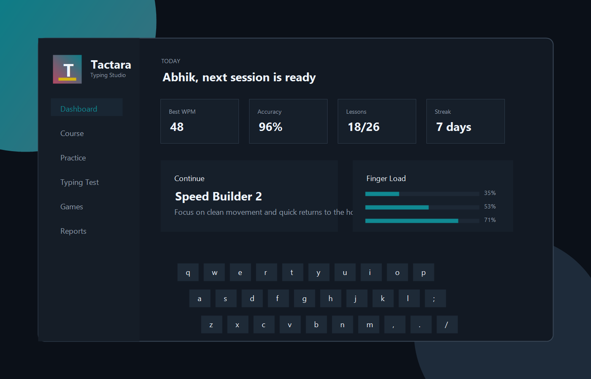

Windows Typing Trainer
Tactara makes touch typing feel deliberate, polished, and personal.
Practice through structured courses, adaptive weak-key drills, timed tests, and focused games in a clean desktop app made by Abhik Maity.
No account required
Local progress storage
Export and import backup

Practice System
Everything a serious learner expects.
Structured Courses
Foundation, builder, speed, punctuation, number, email, code, and mastery lessons.
Weak-Key Training
The app tracks missed keys and creates focused drills around the keys that need attention.
Timed Tests
Measure WPM, accuracy, errors, and typing rhythm with different topics and durations.
Practice Games
Key Rain and Word Sprint make repetition more engaging while still training precision.
Reports
Review recent sessions, course completion, daily goals, streaks, and key accuracy heatmaps.
Portable Data
Export and import your progress when moving between computers or rebuilding the app.
Desktop App
Install Tactara on Windows.
The installer creates a real desktop app with a frameless window and custom floating controls. Since this is a local build, Windows may show a SmartScreen notice until the app is code-signed.
Tactara Typing Studio 1.0.0
Windows x64 installer
Download installer
Tactara for macOS
DMG installer target configured for Apple Silicon and Intel Macs
Mac build notes
Creator
Made by Abhik Maity.
Tactara is designed as a personal practice studio: quiet, fast, focused, and built around measurable improvement instead of noisy signups.
Install steps
- Download the Windows installer.
- Run the setup file and choose an install location.
- Open Tactara from the desktop or Start Menu.
- Enter your name and begin the course.